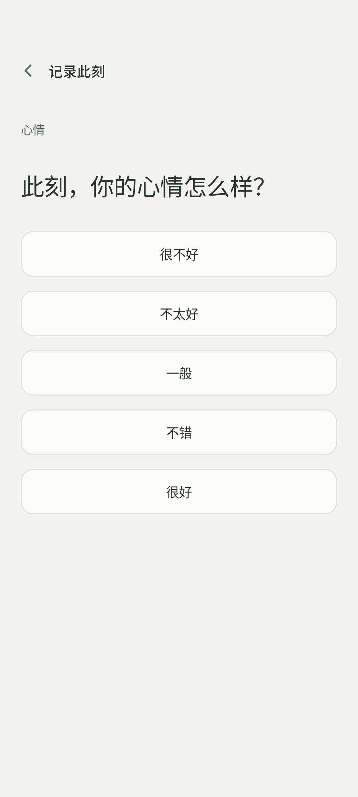
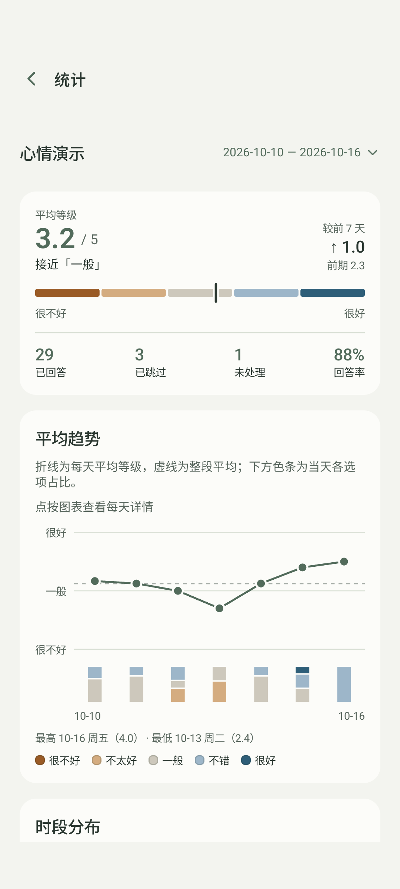

问你在意的问题
自定义问题和从低到高的选项，把每天的提醒安排在适合自己的时间。
此刻，你的精力如何？
很低 很充沛
为日常，留一点觉察
今天的你，感觉怎么样？
在忙碌之间回答一个小问题，
慢慢看见自己的变化。
Android 8.0+ · 免费开源 · 无需账号
A LITTLE CHECK-IN
WITH YOURSELF.

01 / 留下此刻
心情、压力、精力……你想留意什么，就记录什么。
自定义问题和从低到高的选项，把每天的提醒安排在适合自己的时间。
提醒到来，选择当下的感受。保存后直接返回，生活的节奏继续。
不方便时可以跳过。不用追回上一刻的感受，下一次只回答当下。

真实应用界面 · 合成演示数据
02 / 看见变化
有些变化，回头看才会发现。选一段时间，看看自己的状态如何起伏，又在哪些时段有所不同。
03 / 属于自己
无需注册，离线使用。记录保存在手机本地，App 不联网。
是否导出、是否分享，由你决定。
一些小问题
支持 Android 8.0 及以上。从本页下载 APK，在手机上打开并按系统提示允许安装。当前没有 iOS 版。
请先允许通知，并检查记录中的提醒开关。部分手机还需要开启自启动、允许后台运行；精确提醒可在系统“闹钟与提醒”中授权。强制停止后请重新打开 App。查看提醒帮助 ↗
目前可以导出 CSV，但还不能导入恢复。卸载、清除应用数据或丢失手机可能导致记录丢失。升级请直接覆盖安装。
App 只在本地整理提示词，不连接 AI 服务。你可以预览、复制后自行选择是否发送给外部工具。
免费，采用 MIT 开源许可证。欢迎在 GitHub 提交问题、建议或代码。第三方组件保留各自的许可证。
Android 8.0+ · 免费开源
查看版本与更新说明 ↗